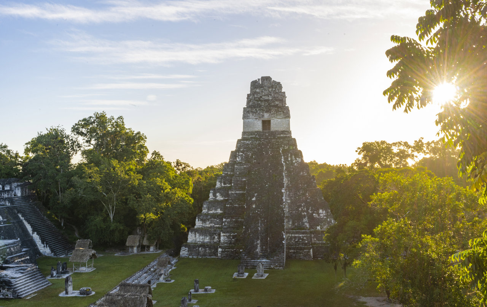
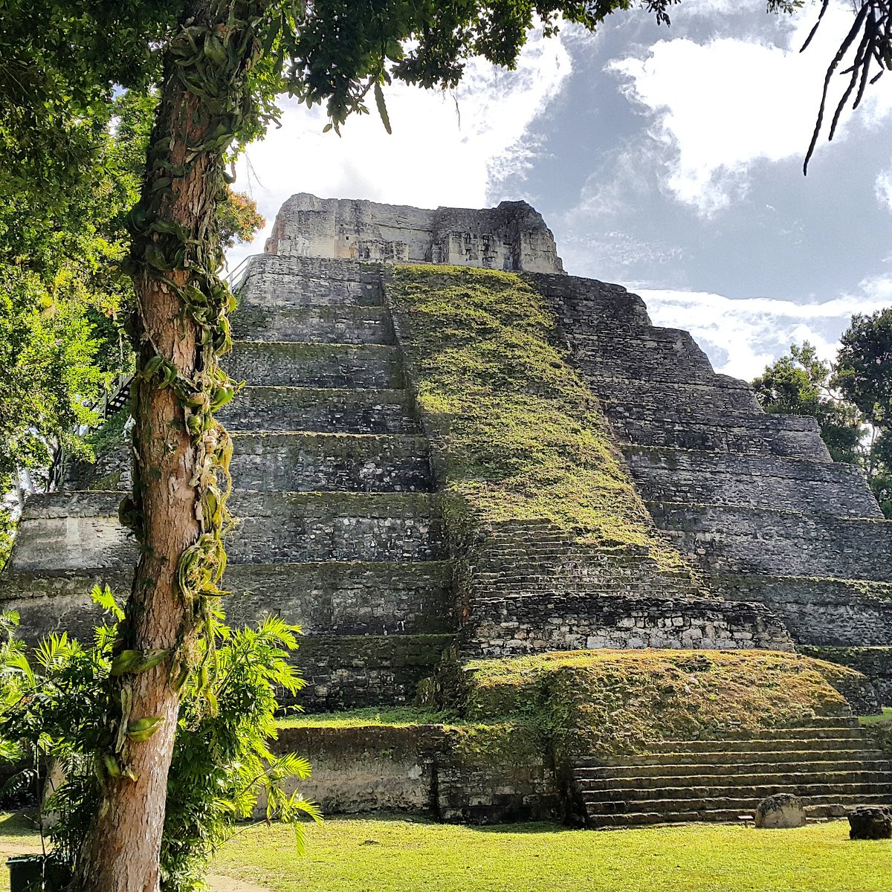
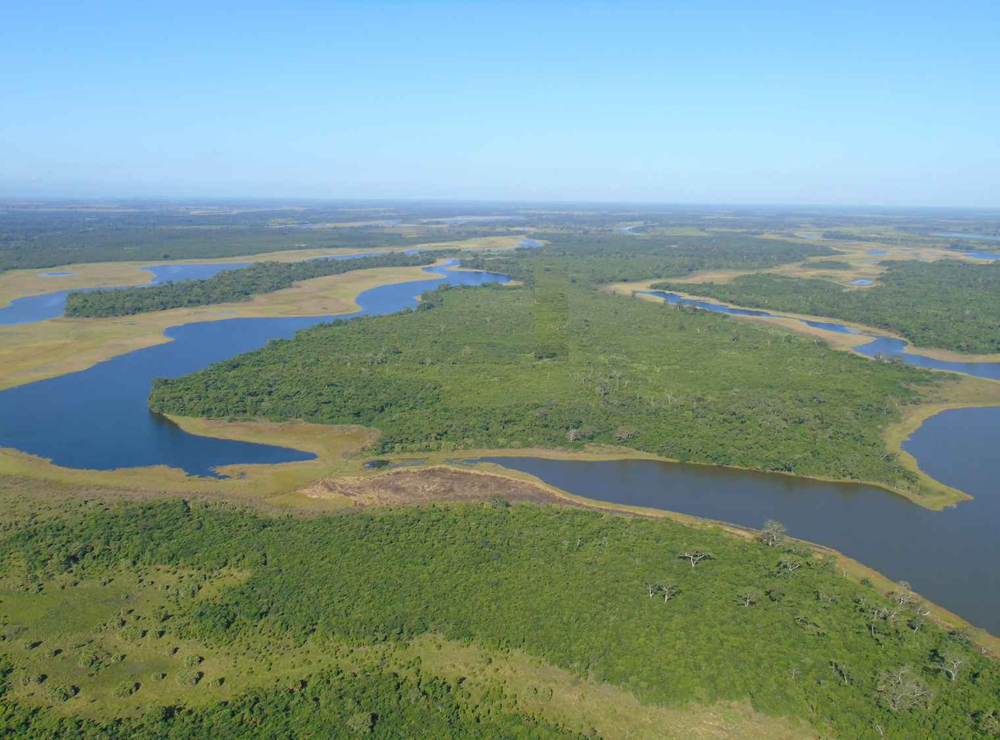

Lugares Turísticos
Explora los sitios más emblemáticos de Petén
Tikal
Descripción: Tikal es uno de los sitios arqueológicos más importantes de la civilización maya, ubicado en el corazón del Parque Nacional Tikal, declarado Patrimonio de la Humanidad.
Servicios:
• Guías turísticos certificados
• Senderos interpretativos
• Centro de visitantes y museo
• Área de camping y hoteles ecológicos
Actividades:
• Recorridos por templos mayas
• Observación de fauna (monos, aves)
• Caminatas por la selva
• Fotografía y arqueología
Ubicación: Ver en Google Maps
Yaxhá
Descripción: Yaxhá es un sitio arqueológico maya rodeado por lagunas y selva. Se caracteriza por su tranquilidad y vistas panorámicas desde las estructuras elevadas.
Servicios:
• Tours guiados
• Senderos señalizados
• Miradores elevados
• Zonas para acampar
Actividades:
• Exploración de ruinas
• Avistamiento de aves
• Atardeceres desde templos
• Paseos en lancha por la laguna
Ubicación: Ver en Google Maps
Laguna del Tigre
Descripción: El Parque Nacional Laguna del Tigre es el área protegida más grande de Guatemala, ubicada en el noroeste de Petén. Es clave para especies en peligro como el jaguar, tapir y aves migratorias.
Servicios:
• Puestos de control y vigilancia de CONAP
• Guías comunitarios (en algunas zonas)
• Centros de investigación y monitoreo
• Campamentos básicos
• Transporte fluvial en algunas rutas
Actividades:
• Observación de aves
• Avistamiento de fauna
• Recorridos en lancha
• Caminatas ecológicas
• Fotografía y monitoreo ambiental
Ubicación: Ver en Google Maps